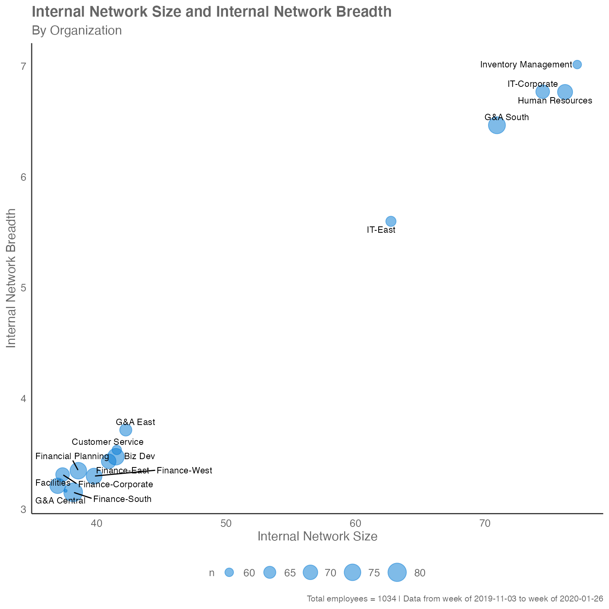
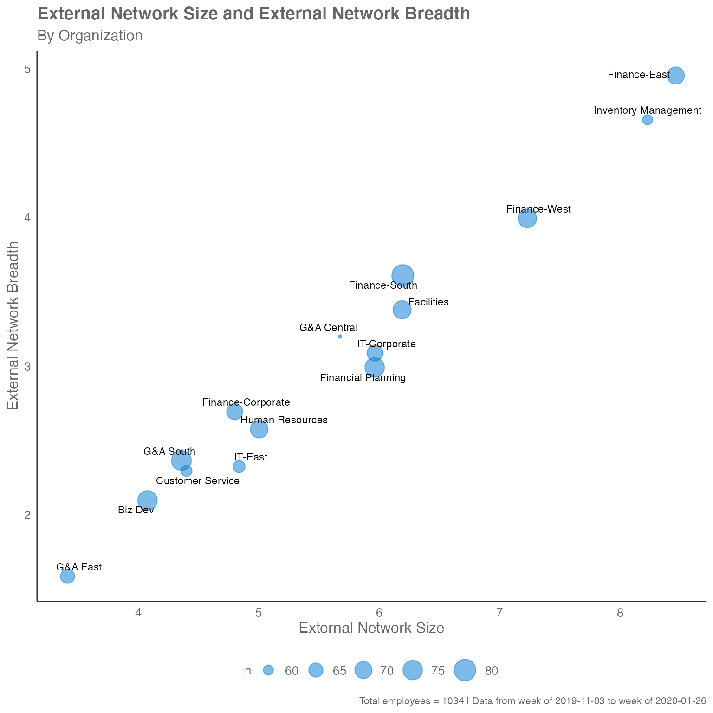
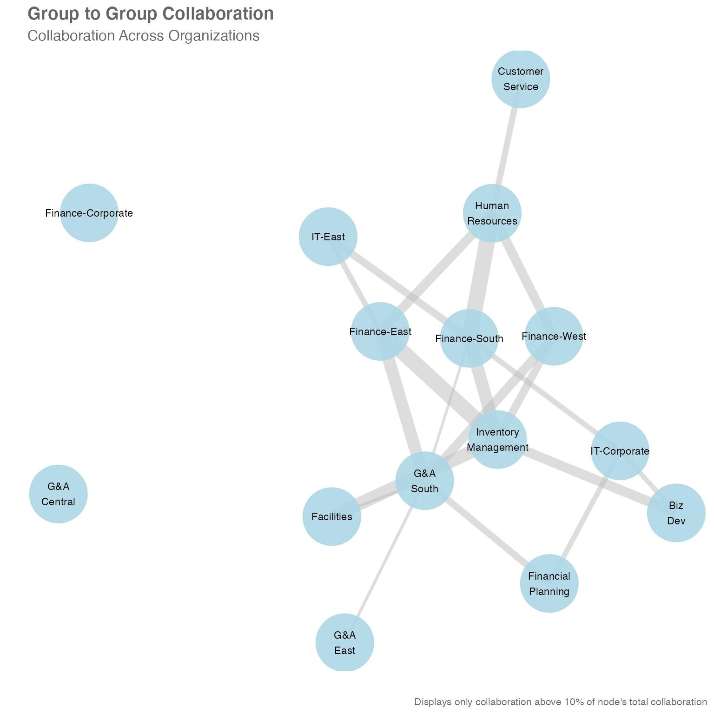

vignettes/network-analysis.Rmd
network-analysis.RmdThis article provides a beginner’s introduction to Organizational Network Analysis (ONA), its basic concepts, and how to run them with the functions available from the wpa R library.
Organizational Network Analysis (ONA), in the context of Workplace Analytics, is a family of methods to understand patterns of collaboration by examining the strength, frequency and nature of interactions between people. Analyzing and visualizing network connectivity in your organization can help you shape business strategy that unlocks success for individual and team productivity, innovation, employee engagement and organizational change, thereby helping your business become more resilient and effective.
Most valuable information in organizations is not codified. As employees collaborate, information flows from one person to the other or they generate knowledge together. These connections deliver value when information is exchanged and visualizing these relationships can provide us with a holistic view of how information flows through an organization. ONA can help us reveal central network collaborators, critical connections, and potential barriers to information flow.
We will start with the basic building blocks of networks. Networks consist of two primary aspects, a multitude of separate entities (“nodes”) and the connections between them (“edges”). Nodes and edges provide a foundation on how information in your organization is flowing, and also strategize on how they can flow and should flow. Nodes in ONA visualizations typically represent individual employees or groups of employees (e.g. Organization, Region etc.), serving as important hubs for the exchange of ideas and information. In addition to these nodes, you have connections (so-called “edges”) between them. These edges indicate there is some relationship between the nodes, meaning these individuals or groups have a connection to each other when they collaborate. In the context of Workplace Analytics, we identify these connections between nodes in the network based on collaboration activities (emails, meetings, calls, instant messages). In a network analysis, we also need to understand the strength of the tie. For this calculation we are using time spent together in collaboration. In addition, we have to consider the direction in which collaboration is operated. For meetings there is no direction, but for emails, chats and calls we have a sense of direction which we can look at.
Workplace Analytics provides a powerful data source for performing network analysis and for surfacing insights about information flows in your organization. The wpa R library contains several powerful features that enables you to create such analysis and visualizations.
Network analysis can create a data-driven approach to drive organizational challenges. Practical scenarios include:
Network analysis is quantitative and uses collaboration data to create a matrix of relationships and applies matrix algebra to calculate measures. The wpa R package provides a set of functions (4) that can be used to get started with network analysis. You can start with the connectivity_report() which provides a first baseline on the topic Teaming and Networking. This report visualizes, among other things, external and internal networks with external_network_plot() and internal_network_plot():
internal_network_plot(): plots the internal network metrics for a HR variable as a scatter plot, showing Internal Network Breadth as the vertical axis and Internal Network Size as the horizontal axis. This function is organization
external_network_plot(): plots the external network metrics for a HR variable as a scatter plot, showing External Network Breadth as the vertical axis and External Network Size as the horizontal axis.
These two functions visualize metrics like network size and network breadth and return either a table or plot as an output:
Network size: the number of people external or internal to the company with whom the person had at least two meaningful interactions in the last four weeks.
Network breadth: this is synonymous with Networking outside Organization or Networking outside Company, depending on whether this refers to internal network breadth or external network breadth. See more from here.
Note that the above functions do not manipulate the graph or an edge list directly, but rather on person-level network metrics which have already been computed within Workplace Analytics.
network_g2g(): an advanced function which manipulates a group-to-group collaboration graph. It creates a network plot with the group-to-group query and displays collaboration across your organization. The default metric value is collaboration hours but can be changed as wanted.
network_p2p(): another advanced function where you can create a network plot with the person-to-person network query. It is a visualization of network analysis plot based on strong and diverse tie metrics. It also has additional capabilities to perform network community detection.
Strong and diverse tie metrics are based on collaboration activities and indicates how varied, broad and strong a person’s connections or engagements are. See more from here.
Summary of the functions:
| Function | Description | Metrics |
|---|---|---|
internal_network_plot() |
Plots the internal network metrics for a HR variable as a scatter plot, showing “Internal Network Breadth” as the vertical axis and “Internal Network Size” as the horizontal axis. | Internal Network Size |
external_network_plot() |
Plots the external network metrics for a HR variable as a scatter plot, showing “External Network Breadth” as the vertical axis and “External Network Size” as the horizontal axis. | External Network Size |
network_g2g() |
Plots collaboration across your organization. | Collaboration Hours |
network_p2p() |
Plots network analysis based on strong and diverse tie metrics. | Diverse Tie Score Strong Tie Score |
To use the functions, the input data must be a data frame object in R. Out-of-the-box queries generated through the Workplace Analytics tool can be read in as a CSV file into a data frame object. However, the functions user different queries as an input parameter and this must be considered whenever using those queries:
| Query | Description Query | Functions |
|---|---|---|
| Standard Person Query | Query that analyses collaboration trends across the company | external_network_plot() internal_network_plot() |
| Group-to-Group Query | Query that analyses how groups collaborate with each other | network_g2g() |
| Person-to-Person Network Query | Query that analyses network connectivity between individuals | network_p2p() |
Another parameter that can be specified with the WpA R package is the return parameter, which represents either a table (return = "table") or a plot (return = "plot"). Plots visualize your output and can show a large amount of data quickly in a way that is easy to process.
internal_network_plot(sq_data, return = "plot")
Interpretation: Organizations in the lower left corner have a internal smaller network size and network breadth. This may mean that they do not collaborate as much with other internal organizations and do not show a very large network. In comparison, organizations in the upper right corner have a larger internal network size and also network breadth. It can be inferred that they collaborate very broadly across the whole organization, maintaining many meaningful connections.
external_network_plot(sq_data, return = "plot")
Interpretation: Organizations in the lower left corner have a smaller external network size and network breadth. This may mean that they do not collaborate as much with other external collaborator and do not show a very large external network. In comparison, organizations in the upper right corner have a larger external network size and also network breadth. Thus, they collaborate very broadly and often with external collaborators.
network_g2g(g2g_data, return = "plot")
Interpretation: This visualization can be used to show how strongly different organizations are connected. The connections between the organizations shows the strength of the network and give an indication of how strong this connection is. Organizations that have no connection or only a very weak connection may have a possible risk of exclusion because they are not as strongly connected to other organizations.
p2p_data <- p2p_data_sim(size = 50)
p2p_data %>% network_p2p(display = "louvain", path = NULL, return = "plot")display lets you decide on what algorithm you want your output to be based on. Find more information here.The best practice towards network analysis is always to first establish and validate hypotheses with the data, and then visualize the result. The reason why one should not start an analysis by interpreting a network visual is that network visualizations are critically affected by inputs such as layout algorithms (of which many are non-deterministic), inputs to those layout algorithms, and visual elements such as the colors and transparencies of the nodes and edges.
The above point on best practice is particularly pertinent for person-to-person analyses, which typically involve a large number of nodes and misleading conclusions can be drawn if one is not fully aware of the input parameters that have been used in generating the visual. In this case, the recommend interpretative approach would be to:
Run the summary tables or graph statistics by returning ‘table’ or ‘network’, making use of graph analysis functions that are compatible with an ‘igraph’ object.
Develop a series of hypotheses based on your knowledge of the organization and the data you are seeing. For instance, the hypothesis could be that Team A and Team B have very few ties with each other, but Region C maintain very strong ties with both of those regions, making it potentially a less optimal solution to allocate Team A and B together on ‘office day’ rotations. The same principle applies when generating communities.
Validate hypothesis with the data, using multiple permutations. For instance, the selected date range and population could lead to a different outcome in the data.
Iterate with input parameters to create the visual that is most appropriate for communicating your analysis.
This article is a first introduction to the topic of Organizational Network Analysis but there is more to come. At this point you should know the basic buliding blocks of network analysis and how to run the relevant functions in the wpa R library. Here are some more references on how to use the wpa R package and the topic of networks: